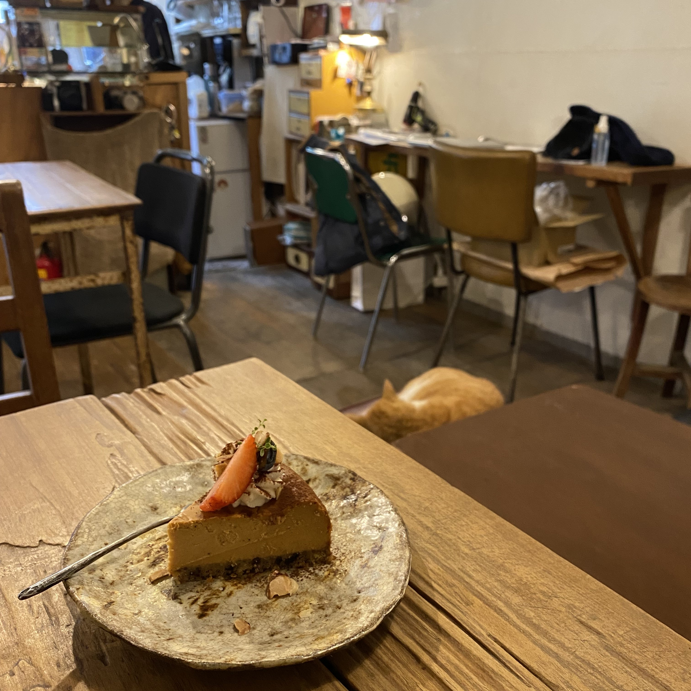
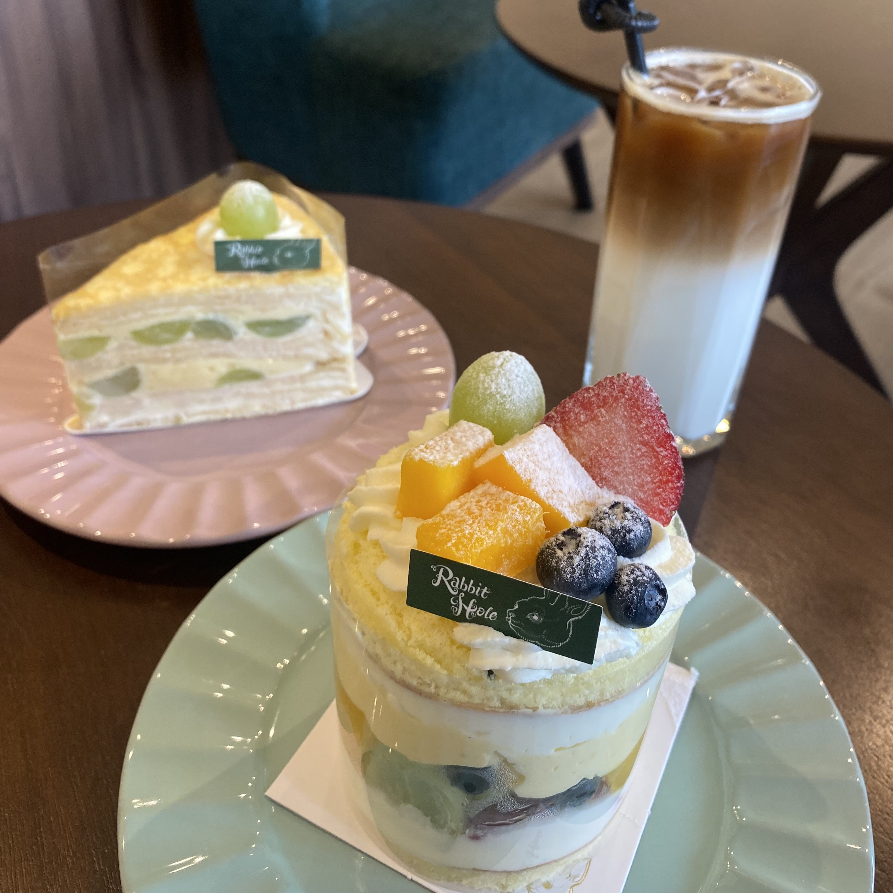
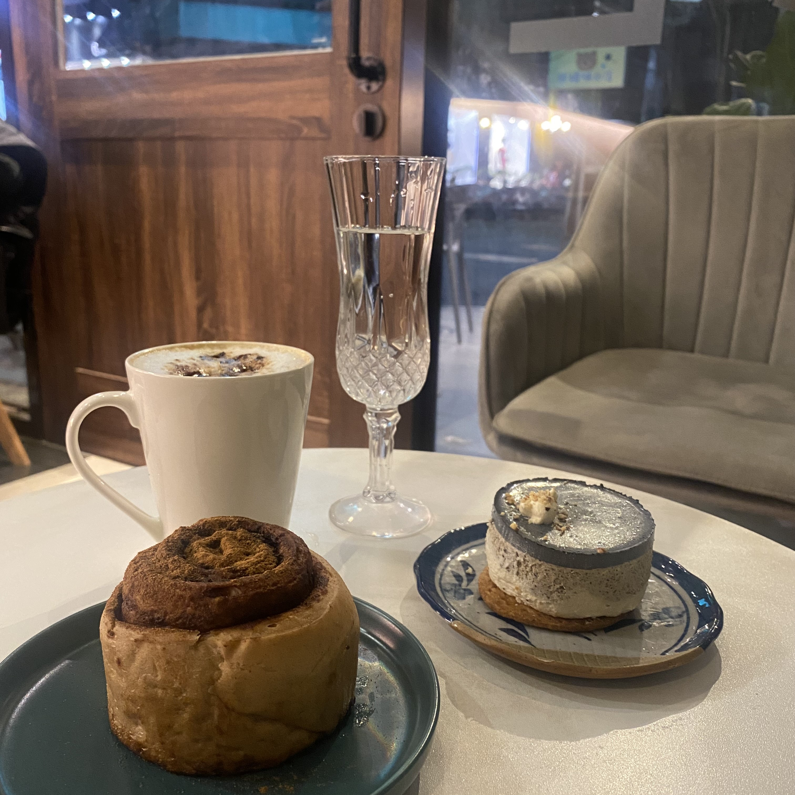
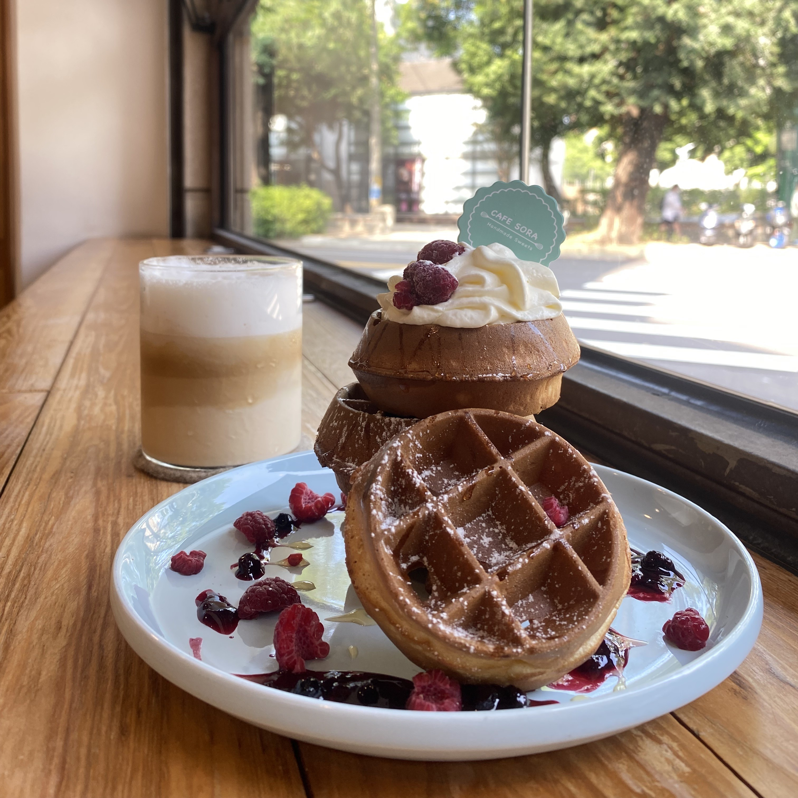

貪吃鬼 兔子洞 好好 Coffee Industry-Cafe Sora
台中市南區五權南路278巷25號
位於中興大學附近的巷子內一間低調安靜的咖啡廳，牆上的小黑板寫著每日的菜單，
每月會在ig公告公休時間，
鍋煮奶茶是本店的特色飲品，茶香與奶味恰到好處，還有一股獨特的香氣。
店內有許多漫畫和有趣的書籍，不知不覺可以待上一下午呢!
台中市西區五權西一街127號(國美本店) 週一公休
 台中市西區南屯路一段87號(柳川南屯2店) 週一週二公休
以愛麗絲的夢遊仙境為主題的一間咖啡廳，
蛋糕品項豐富，大多是繽紛的水果蛋糕，
我最喜歡的是原味海綿蛋糕配上鮮奶油，裡面放滿各式各樣的水果再加上卡士達醬，
草莓季絕對不能錯過這間店!
台中市西屯區精明一街42號 週一公休
大半夜了還想喝咖啡吃甜點怎麼辦，還好有這間好好深夜咖啡廳，
營業時間到凌晨1點，環境乾淨舒適，主打的是肉桂捲，
但個人認為乳酪蛋糕更好吃，層次感豐富。
台中市西區民生路179號
室內裝潢採工業風設計，座位多數有設插座，非常適合學生或上班族使用電腦，
鬆餅分量很足夠，外酥內軟，甜度與配料都恰到好處，另外早午餐也非常推薦!
平日人不多的時候很適合來這裡一邊做作業一邊享用早午餐或下午茶。